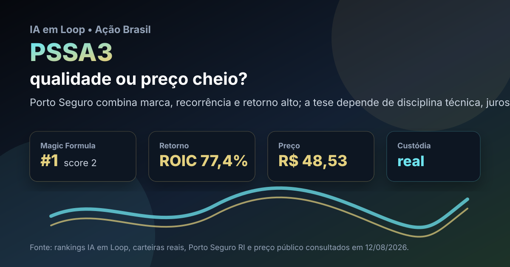

12/08: PSSA3, Porto Seguro e o preço da seguradora de qualidade
PSSA3 aparece no topo da Magic Formula local e também está nas duas carteiras brasileiras reais do IA em Loop. A pergunta central é direta: Porto Seguro ainda oferece margem de segurança ou o mercado já cobra caro por uma seguradora de qualidade?

Porto Seguro combina marca, distribuição e histórico operacional; o ponto sensível é se o preço atual ainda compensa os riscos de sinistralidade, juros e concorrência.
Resposta curta: qualidade real, mas a régua precisa ser exigente
No histórico Magic Formula mais recente do IA em Loop, PSSA3 aparece em 1º lugar, com ROIC de 77,4%, earnings yield de 1,6%, EV/EBIT de 0,63 e score 2. O ativo também aparece nas carteiras reais brasileiras: na BESST, são 2 ações, preço médio de R$ 51,65, valor comprado de R$ 103,30 e peso de 6,1%; na Magic Formula, são 3 ações, preço médio de R$ 50,57, valor comprado de R$ 151,72 e peso de 8,6%.
A cotação pública consultada em 12/08/2026 mostrava PSSA3 perto de R$ 48,53, abaixo dos preços médios registrados nas duas carteiras. Isso não transforma a ação automaticamente em barganha. Em seguradoras, preço justo depende de lucro técnico, sinistralidade, resultado financeiro, disciplina de subscrição e capacidade de manter crescimento sem destruir margem.
O que os dados verificados mostram
A consulta ao site de relações com investidores da Porto Seguro em 12/08/2026 confirmou o canal público da companhia. Nos arquivos locais do IA em Loop, PSSA3 aparece como Porto Seguro no setor de seguros, com presença tanto na carteira BESST quanto na carteira Magic Formula. O painel de custódia também registra proventos futuros provisionados para PSSA3: R$ 1,77 em dividendo na carteira BESST, R$ 0,85 e R$ 0,90 em juros sobre capital próprio nessa mesma carteira, além de R$ 1,27 em juros sobre capital próprio na carteira Magic Formula.
O histórico de preço público de um ano consultado via provedor de mercado mostrou mínima de R$ 45,09, máxima de R$ 57,21 e preço atual próximo da parte baixa-intermediária da faixa. A leitura é útil: a ação não está no topo anual, mas também não está distante o suficiente da mínima para dispensar análise de resultado.
| Métrica verificada | Fonte/período | Valor | Leitura |
|---|---|---|---|
| Posição no ranking | Histórico Magic Formula IA em Loop 2026-08 | #1 | qualidade/retorno operacional no topo do filtro |
| ROIC | Histórico Magic Formula IA em Loop 2026-08 | 77,4% | retorno muito alto, exigindo checagem de recorrência |
| Custódia BESST | Carteira real publicada | 2 ações; PM R$ 51,65 | posição real pequena, mas relevante para acompanhamento |
| Custódia Magic Formula | Carteira real publicada | 3 ações; PM R$ 50,57 | posição maior no método quantitativo local |
| Preço de mercado | Consulta pública 12/08/2026 | R$ 48,53 | abaixo do preço médio das duas carteiras |
Por que PSSA3 importa agora
Seguradoras são negócios que parecem simples por fora, mas têm dois motores diferentes. O primeiro é o resultado técnico: cobrar prêmios adequados, controlar sinistros e distribuir produtos com eficiência. O segundo é o resultado financeiro: aplicar reservas e ganhar com juros, sem assumir risco excessivo. PSSA3 interessa porque junta marca conhecida, base de clientes, distribuição e presença em ramos de seguro com recorrência.
Para uma carteira educacional, PSSA3 também tem um papel diferente de commodity ou banco. A tese não depende apenas de ciclo externo; depende de execução diária em precificação de risco, controle de sinistros e venda cruzada. Quando a companhia consegue fazer isso bem, o retorno sobre capital pode ficar alto por bastante tempo. Quando erra preço ou enfrenta inflação de sinistros, a margem some rápido.
PSSA3 parece uma tese de qualidade operacional, não uma simples aposta em dividendo. O preço atual abaixo dos preços médios da carteira melhora o ponto de observação, mas a decisão educacional deve depender de lucro técnico, sinistralidade, crescimento de prêmios, resultado financeiro e manutenção de disciplina de capital.
O que favorece e o que ameaça a tese
Favoráveis
• Marca forte e reconhecida em seguros no Brasil.
• Presença simultânea nas duas carteiras brasileiras reais do IA em Loop.
• Liderança no ranking Magic Formula local, com ROIC elevado.
• Preço consultado abaixo do preço médio registrado nas duas carteiras.
• Proventos futuros mapeados nos painéis de custódia.
Desfavoráveis
• Seguros sofrem quando sinistros sobem mais rápido que prêmios.
• Resultado financeiro depende do nível de juros e da qualidade das aplicações.
• Concorrência digital pode pressionar preço e comissão.
• ROIC muito alto pode ser cíclico ou sensível à base de cálculo.
• A ação já é reconhecida como empresa de qualidade; desconto pode ser limitado.
Checklist para acompanhar daqui em diante
- Sinistralidade: se piorar de forma persistente, a tese perde margem de segurança.
- Prêmios emitidos: crescimento saudável deve vir com preço técnico correto, não só volume.
- Resultado financeiro: juros e carteira de aplicações podem ajudar, mas não substituem seguro bem precificado.
- Retorno sobre capital: ROIC alto precisa aparecer como padrão, não como fotografia isolada.
- Proventos e capital: dividendos são positivos, mas não devem enfraquecer a capacidade de crescer ou absorver sinistros.
Conclusão
A resposta para a pergunta do post é: PSSA3 tem sinais reais de qualidade, mas não deve ser tratada como compra automática só por liderar o ranking. O ativo combina presença em carteira real, marca forte e retorno operacional alto. O risco está em pagar por qualidade sem margem suficiente ou subestimar a volatilidade de sinistros e resultado financeiro.
Na régua do IA em Loop, PSSA3 merece acompanhamento prioritário porque une ranking, custódia e tese operacional compreensível. O ponto decisivo daqui para frente é confirmar se Porto Seguro continua convertendo escala e marca em lucro técnico recorrente. Se isso se mantiver, o preço abaixo do preço médio das carteiras fica mais interessante; se não, o ranking pode estar olhando pelo retrovisor.